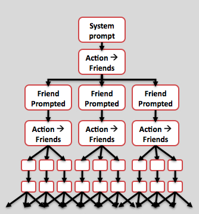
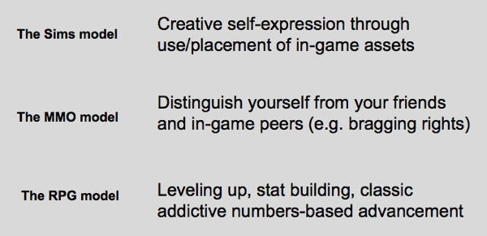

Jesse Schell gave a must-watch talk at DICE this year, encapsulating a lot of issues I've recently been thinking about. He starts on the topic of the rise of social media games and moves to discussing convergence of social/new media, technology, entertainment and so on through game-like constructs; essentially, gameplay being incorporated into everything else we do.
Part one of this post will outline my experience with one aspect of his talk - the rise of social media gaming.
DEVIOUS, DEVIOUS SOCIAL MEDIA GAMES
As Schell states in his talk, social media gaming - specifically on Facebook - got huge in 2009.
I recently took a month or two to do some research on quite a few - "X-Wars" games, Farm games, Pet games, Quizzes, Puzzles, etc. The ones I spent the most time on were Word Challenge, Farmville, Yoville, Mafia Wars, Cafe World, Country Story, Who Has the Biggest Brain, Geo Challenge, and Crazy Planets among others.
Spending so much time on these games pained me, greatly - and yet I still managed to find myself extremely, disturbingly, addicted. I have since broken my habit and am hoping to avoid a relapse.
My experience playing them consisted largely of performing progressively repetitive, task-based, time consuming chores; making up largely an empty gameplay experience, with the system constantly prompting me with its aggressive monetization models, as well as encouraging its its viral spread across my social network.

I can't conceal my distaste at these strategies for addiction. And yet, again... I was addicted. Briefly, but absolutely addicted.
My experience was that gameplay consisted largely of creating a sense of compulsion and obligation to move on those tasks, and yet there is some fun to be had in these games, true. In particular I enjoyed Crazy Planets with its basic artillery (e.g. Worms) gameplay.

But overall, these were the feelings that these games brought up in me:
Do this! Share this! Share to your friends! Look at this sad kitty that wandered onto your farm! Give him to your friends! Don't wait or your crops will go to waste! Get your friends to join you otherwise your mafia is too weak! Now spend some real money on in-game currency! Go go go! Be on our game, all the time! Otherwise your fake stuff will go to waste; all of it!
What's the bottom line?
Here's the thing though - it works, and it works WELL. All one needs to do is to look at Zynga's numbers to know that. But is it sustainable? And what of now these highly polished gameplay conventions, now tried and tested in social media, making their way to previously uncharted territory for games? (Part 2)
I definitely encourage everyone to watch Jesse Schell's talk if you haven't done so already.